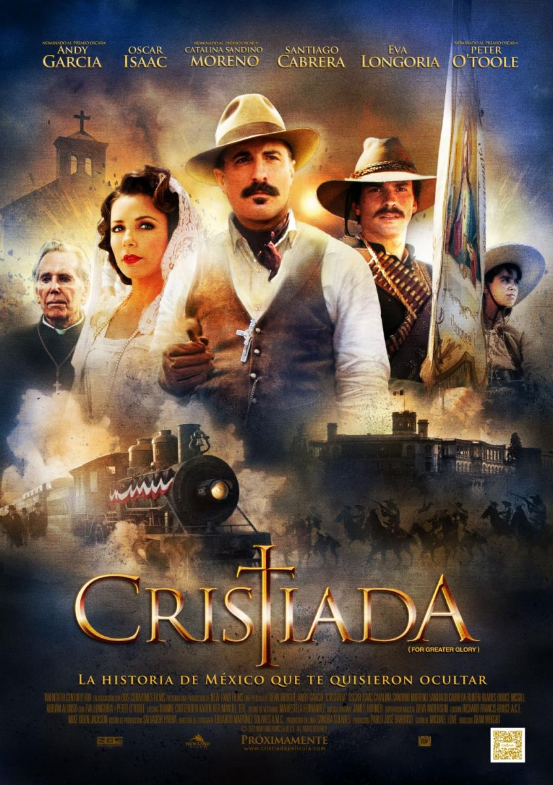

Cristiada
|  |
SinopsisEn 1926, Gorostieta (Andy García), un general retirado, ve cómo en México estalla una violenta guerra civil. Con el apoyo de su esposa (Eva Longoria), decide unirse al bando revolucionario y transformar a un grupo irregular de rebeldes, sin líder que los dirija, en una fuerza heroica, capaz de defender con valentía la causa de la justicia. Se basa en la Guerra Cristera (1926-29), una rebelión que estalló debido a la persecución de que era víctima la Iglesia Católica por parte del Gobierno mexicano. Ambientada en México y rodada en inglés, es la película más cara del cine mexicano. |
|---|